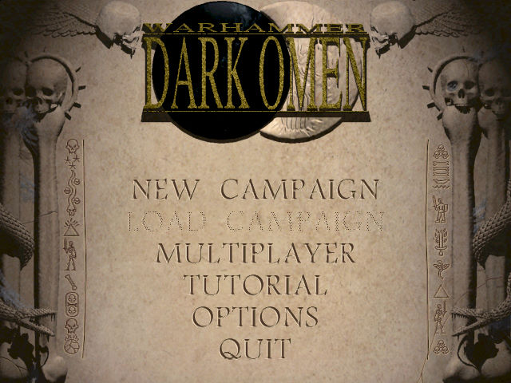
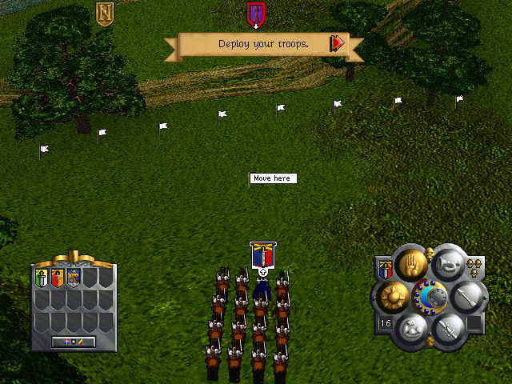

名稱：戰鎚2：黑暗預兆／暗黑啟示錄 (Warhammer: Dark Omen，英文版) 簡介：Mindscape 1998年出品的即時戰術遊戲，由EA代理發行 [待補]。

保護：光碟，破解碼： EngRel.exe E8 CE 12 06 00 85 C0 75 19 -- -- -- -- -- -- -- EB -- 備註：非安裝移機者，需進行下列Registry設定（假設安裝目錄在C:\DarkOmen）： [HKEY_LOCAL_MACHINE\SOFTWARE\Electronic Arts\Dark Omen\1.0\paths] [HKEY_LOCAL_MACHINE\SOFTWARE\WOW6432Node\Electronic Arts\Dark Omen\1.0\paths] "MOVIES"="C:\\DarkOmen\\movies" "1PBATTLE"="C:\\DarkOmen\\gamedata\\1pbat" "2PBATTLE"="C:\\DarkOmen\\gamedata\\1pbat" "MAPS"="C:\\DarkOmen\\graphics\\maps" "PICTURES"="C:\\DarkOmen\\graphics\\pictures" "PORTRAIT"="C:\\DarkOmen\\graphics\\portrait" "MUSIC"="C:\\DarkOmen\\sound\\music" "BOOKS"="C:\\DarkOmen\\graphics\\books" "SPEECH"="C:\\DarkOmen\\sound\\sp_eng" "1PARMY"="C:\\DarkOmen\\gamedata\\1parm" "2PARMY"="C:\\DarkOmen\\gamedata\\2parm" "FURNITURE"="C:\\DarkOmen\\gamedata\\furnture" "GAMEFLOW"="C:\\DarkOmen\\gamedata\\gameflow" "PARTICLES"="C:\\DarkOmen\\gamedata\\particle" "BANNERS"="C:\\DarkOmen\\graphics\\banners" "CURSORS"="C:\\DarkOmen\\graphics\\cursors" "FONTS"="C:\\DarkOmen\\graphics\\fonts" "SPRITES"="C:\\DarkOmen\\graphics\\sprites" "PROGRAM"="C:\\DarkOmen\\prg_eng" "SOUND"="C:\\DarkOmen\\sound\\h" "SSCRIPT"="C:\\DarkOmen\\sound\\script" "SFX"="C:\\DarkOmen\\sound\\sound" "ARMYTMP"="C:\\DarkOmen" "SAVE"="C:\\DarkOmen\\savegame" 備註：由於3D卡支援問題，只能使用Win64+dgVoodoo2執行。但在Win64系統，遊戲會無法正 確判斷光碟，請使用破解碼解決。 備註：遊戲需要d3drm.dll。